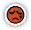

หน้าแรก › เอาตัวรอด
การเอาตัวรอด ใช้ได้
หลอดพลังชีวิต สุขภาพ พลังงาน ความเหนื่อยล้า · นั่งพัก ดื่มน้ำ ล้างตัว · อุณหภูมิร่างกายและอาการตัวเย็น/ตัวร้อนเกิน
บางหัวข้อในหน้านี้ยังไม่เสร็จ
ทุกเกาะในดูรังโกกัดกินร่างกายคุณเรื่อย ๆ — ความเหนื่อยล้าสะสมจากงานและภูมิอากาศ พลังงานหมดไปกับการเดิน อุณหภูมิร่างกายขึ้นลงตามอากาศ หน้านี้อธิบายหลอดต่าง ๆ บนจอ วิธีฟื้นฟู และตัวเลขจริงของเซิร์ฟ
สิ่งที่ทำได้
- นั่งพัก ข้างที่พัก/กองไฟ เพื่อลดความเหนื่อยล้าและฟื้นพลังชีวิต
- ดื่มน้ำ และ ล้าง ตัวที่ริมน้ำ เพื่อลดความเหนื่อยล้าจากความร้อน
- ตักน้ำ ใส่ภาชนะไว้ใช้ทีหลัง
- กินอาหารเติมพลังงาน (รายละเอียดที่ การกิน)
- หลบฝน ผิงไฟ กินของร้อน/ของเย็น เพื่อคุมอุณหภูมิร่างกาย
- ออกเกมไปพัก — เวลาที่ออฟไลน์นับเป็นการนั่งพัก
หลอดบนจอ ใช้ได้
| หลอด | เพดานเริ่มต้น | เปลี่ยนเองตามเวลา | หมายเหตุ |
|---|---|---|---|
| พลังชีวิต | เท่ากับหลอดสุขภาพ | ฟื้น +60/นาที | หมด = ตาย (การตาย) |
| สุขภาพ | 300 (+4 ต่อเลเวลที่เกิน 1) | ฟื้น +4.2/ชั่วโมง | เป็นเพดานของพลังชีวิต · ลดเมื่อป่วยตัวเย็น/ตัวร้อนเกิน |
| ความแข็งแรง | เท่ากับหลอดพลังงาน | ฟื้น +5/วินาที | ใช้วิ่ง/สู้ |
| พลังงาน | 100 (+1.5 ต่อเลเวลที่เกิน 1) | ฟื้น +16.7/ชั่วโมง · เดิน −1.9/นาที | เติมด้วยการกิน · เป็นเพดานของความแข็งแรง |
| ความเหนื่อยล้า | 0–100 | ไม่ลดเองระหว่างออนไลน์ | เพิ่มจากงาน ภูมิอากาศ อากาศ · ลดด้วยการพัก |
- พลังงานไม่พอสำหรับงานที่จะทำ เกมจะถามก่อนว่าจะทำต่อไหม
เพดานหลอดและการฟื้นจากทุกแหล่ง ใช้ได้
เพดานหลอดและความเร็วฟื้นบนจอ รวมทุกแหล่ง — ตัวเลขในหน้าค่าสถานะตรงกับหลอดบนจอเสมอ
| แหล่ง | ตัวอย่าง |
|---|---|
| สกิล | สุขภาพ I–VI สุขภาพสูงสุดรวม +250 · เพิ่มกล้ามเนื้อ พลังงานสูงสุด +10 ต่อขั้น · ฟื้นฟูพลังชีวิต I–VI รวม +1/วินาที (ฟื้นเป็น 2/วินาที) · ฟื้นฟูความแข็งแรง I–VI รวม +2.5/วินาที (ฟื้นเป็น 7.5/วินาที) |
| ของที่สวม | ค่าที่เขียนบนชิ้น (เช่น ของอีเวนต์บางชิ้นสุขภาพสูงสุด +90) และคุณสมบัติของชิ้น — ดู เสื้อผ้าและเครื่องประดับ |
| อาหาร | บัพ พัฒนาทักษะ (การกินและดื่ม) |
| ฉายา | ค่าของฉายาที่ใช้อยู่ (ฉายา) |
| บรรยากาศบ้าน | บรรยากาศน่ารัก พลังงานสูงสุด +70 · ฟื้นพลังงาน +0.15/วินาที (บัพ) |
- ความอดทน ส่วนที่เกิน 10 เพิ่มสุขภาพสูงสุด 2 ต่อแต้ม · ความตั้งใจ ส่วนที่เกิน 10 เพิ่มพลังงานสูงสุด 0.8 ต่อแต้ม — นับแต้มจากทุกแหล่ง (ค่าพื้นฐาน ของที่สวม อาหาร)
- สุขภาพสูงสุดเพิ่ม = ค่าปัจจุบันขึ้นตามทันที (แบบเลเวลอัป) · พลังงานสูงสุดที่เพิ่มจากสกิล/ของ/บ้าน ขยายหลอดอย่างเดียว ต้องกินหรือพักเติมเอง
- เพดานลด (ถอดของ บัพหมด) = ค่าที่เกินถูกตัดลงเหลือเท่าเพดาน
- ของที่ความทนทานหมดไม่ให้ค่า (อุปกรณ์และการซ่อม)

ไอคอนความเหนื่อยล้าบนจอ จากสบายถึงหมดแรงความเหนื่อยล้า ใช้ได้
| ระดับ | ผล |
|---|---|
| 60 ขึ้นไป | เหนื่อย — เตือนว่าควรพัก |
| 90 ขึ้นไป | หมดแรง — เก็บของ คราฟต์ ต่อสู้ ไม่ได้ ขึ้นข้อความให้ไปพักหรือกลับเกาะที่อากาศดีกว่า จนกว่าจะลดต่ำกว่า 90 |
ความเหนื่อยล้ามาจากไหน (หน่วย: ต่อนาที · จอแสดงรายการแยกตามหมวด)
- เลเวลเกาะเทียบเลเวลตัวละคร — บนเกาะไม่เสถียร: (0.04 + 0.001 × เลเวลตัวละคร) × 60 × ตัวคูณ ที่ตัวคูณ = 1 − 0.05 × (เลเวลตัวละคร − เลเวลเกาะ) แต่ไม่ต่ำกว่า 0.5 · เกาะเมืองร้าง/เกาะฝึก ครึ่งเดียว · เซฟเฮ้าส์ อังโคร่า เกาะเทม = 0
- ภูมิอากาศประจำเกาะ — 0.5 × (0.35 × เลเวลเกาะ) ต่อนาที (ขั้นต่ำ 0.5) บนเกาะที่มีภูมิอากาศ
- อากาศตอนนี้ — ฝน พายุ หิมะ เถ้าภูเขาไฟ (ตารางที่ สภาพอากาศ)
- ค่าดัชนีแปรผันของเกาะ — Index 2 ขึ้นไป เพิ่ม Index ÷ 2 ต่อนาที (สภาพอากาศ)
- งาน — เก็บของ ก่อสร้าง ซ่อม ฯลฯ (การเก็บของ)
| ตัวอย่าง (อากาศแจ่มใส Index 1) | จากเลเวลเกาะ | จากภูมิอากาศ | รวม/นาที |
|---|---|---|---|
| ตัว Lv1 บนเกาะ Lv15 ไม่มีภูมิอากาศ | 4.2 | 0 | 4.2 |
| ตัว Lv20 บนเกาะ Lv20 ทุ่งหิมะ (ลมแรง) | 3.6 | 3.5 | 7.1 |
| ตัว Lv35 บนเกาะ Lv35 ทะเลทราย (ดวงอาทิตย์แผดเผา) | 4.5 | 6.1 | 10.6 |
| ตัว Lv60 บนเกาะ Lv60 บึง (ร้อนชื้น) | 6.0 | 10.5 | 16.5 |
| ตัว Lv60 บนเกาะ Lv35 ป่าอบอุ่น | 3.0 | 0 | 3.0 |
สถานะที่เปลี่ยนความเหนื่อยล้าจากภูมิอากาศ (คูณกับหมวดนั้น ๆ)
| สถานะ | ได้จาก | ผล | นาน |
|---|---|---|---|
| ล้างตัว | ล้างตัว | พื้นฐาน −20% | 6 นาที |
| น้ำ | ดื่มน้ำ | ความร้อน/ความร้อนจัด −30% · ความหนาวเย็น/หนาวจัด −10% · ความร้อนภูเขาไฟ −10% | 5 นาที |
| ความเปียก | ล้างตัว · ตากฝน/หิมะหนัก | ความร้อน −20% · ความหนาวเย็น +30% · ร้อนชื้น +30% | 2 นาที (ตากอยู่ต่ออายุเรื่อย ๆ) |
| กองไฟ | นั่งพักที่กองไฟ | ความหนาวเย็น −50% · ความร้อน +20% · ล้างความเปียก | ระหว่างนั่ง |
| ร่มเงา | นั่งพักในที่พักมีหลังคา | ความร้อน −50% · ความร้อนจัด −25% · ดวงอาทิตย์แผดเผา −100% | ระหว่างนั่ง |
| อาหารร้อน / อาหารเย็น | กินอาหารร้อน/เย็น | ความหนาวเย็น (หรือความร้อน) −20% ถึง −30% ตามระดับ · อีกฝั่ง +เท่ากัน | 5 นาที |
| ความกระหายน้ำ | ดื่มน้ำทะเล | พื้นฐาน +20% · แห้ง +20% | 3 นาที |
ชุดที่ต้านทานอากาศ ใช้ได้
ค่า ต้านทาน จากชุด หมวก ถุงมือ รองเท้า (และสถานะ/ฉายา/อาหาร) แสดงในหน้าค่าสถานะแท็บการเอาตัวรอด และ ลดความเหนื่อยล้าจากภูมิอากาศ/อากาศชนิดนั้น 1% ต่อแต้ม · ต้านทานชนิดตรงข้าม (เช่นใส่ชุดกันหนาวบนเกาะร้อน) กลับทำให้เหนื่อยเร็วขึ้น — ตารางคู่ชนิดที่ สภาพอากาศ
นั่งพัก ใช้ได้
นั่งพักได้เมื่อยืน บนหรือติดกับ ที่พัก: เต็นท์/บ้าน/เตียง/กองไฟที่ผู้เล่นสร้าง กองไฟประจำเกาะ หรือ จุดขึ้นเกาะ · เดินเมื่อไรก็เลิกพัก
| แบบพัก | ความเหนื่อยล้า | พลังชีวิต | สุขภาพ |
|---|---|---|---|
| นั่งพักธรรมดา | −9.1/นาที | +30/นาที (รวมที่ฟื้นเองเป็น +90) | +12/นาที |
| นั่งพักที่กองไฟบนเกาะอังโคร่า | เต็มหลอดหมดใน 5 วินาที | +30/นาที | +12/นาที |
| กองไฟบทเรียนบนอังโคร่า | หายเกือบทันที | — | — |
| ออฟไลน์ (ออกเกม) | −9.1/นาที | +30/นาที | — |
- ที่พักแบบอื่นบนอังโคร่า (เต็นท์ เตียง จุดขึ้นเกาะ) ใช้อัตราเดียวกับนั่งพักธรรมดา
- พักที่กองไฟ ได้บัพ EXP ×2 นาน 30 นาที (นับต่อแม้ลุกแล้ว) และอุ่นตัว
- นั่งพักเติมหลอดอ่อนแรงจากการต่อสู้ให้เต็ม (การต่อสู้)
- ที่พักในบ้านที่จัดเซ็ตห้องนอน/ห้องนั่งเล่นครบ ได้บัพเพิ่ม (สิ่งปลูกสร้าง)
- ออฟไลน์ นับเป็นการนั่งพักสูงสุด 8 ชั่วโมง (ต้องออกนานเกิน 1 นาที) — ความเหนื่อยล้า 100 หายหมดในราว 11 นาทีที่ออฟไลน์
น้ำ: ดื่ม ล้าง ตัก ใช้ได้
ยืนริมน้ำแล้วปุ่มจะขึ้นเอง
| ปุ่ม | ใช้ที่ | เวลา | ผล |
|---|---|---|---|
| ริมน้ำ | 5 วินาที | พลังงาน +5 · สถานะ น้ำ 5 นาที | |
| ล้าง | ในน้ำ หรือที่อ่างอาบน้ำ/สปาที่สร้างเสร็จ | 5 วินาที | ความเหนื่อยล้า −5 · ล้างตัว 6 นาที · ความเปียก 2 นาที |
| ตักน้ำ | ริมน้ำ มีภาชนะ | 4 วินาที · พลังงาน 2 | แม่น้ำ/ทะเลสาบ = น้ำจืด · ทะเล = น้ำทะเล |
- ดื่มน้ำจากแหล่งน้ำ ไม่นับความอิ่ม — ดื่มได้เรื่อย ๆ
- น้ำทะเลดื่มแล้วติด ความกระหายน้ำ — เอาไปทำอาหาร/ถนอมอาหารแทน (การถนอมอาหาร)
แอ็กชันมีหลอดเวลา ทำได้ทีละอย่าง ใช้ได้
- ดื่มน้ำ ล้างตัว ตักน้ำ และแอ็กชันอื่นที่มีหลอดเวลา (เก็บของ แล่ซาก ย้อมสี จับสัตว์ มองไปรอบ ๆ คราฟต์ ฯลฯ) ทำได้ ทีละอย่าง
- เริ่มอันใหม่ระหว่างที่หลอดเดิมยังไม่เต็ม = อันเก่าถูกยกเลิก ไม่ได้ผล · กดซ้ำรัว ๆ ได้ผลแค่ครั้งสุดท้าย
- ดื่มน้ำ/ล้างตัวได้ผล ตอนหลอดเต็ม · ล้างตัวที่อ่างต้องยังยืนใกล้อ่างตอนหลอดเต็ม
- เวลาและผล (ความเหนื่อยล้าที่ลด พลังงาน) เท่าเดิม · พลังงานตักน้ำหักตอนเริ่ม ถูกยกเลิกไม่คืน
ความอิ่ม ใช้ได้
อาหารแต่ละอย่างเพิ่มความอิ่ม (ไม่มีหลอดบนจอ) เต็ม 100 แล้วติดสถานะ อิ่ม กินต่อไม่ได้ · ความอิ่มลดจากเต็มจนหมดใน 30 นาที — รายละเอียดที่ การกิน
อุณหภูมิร่างกาย ใช้ได้
อุณหภูมิร่างกายไม่มีเกจบนจอ — ดูจาก ท่าทางตัวละคร (ยืนสั่นเมื่อหนาว ท่าร้อนเมื่อร้อน) และไอคอนสถานะ
| รายการ | ค่า |
|---|---|
| ปกติ | 37° |
| ความเร็วเปลี่ยน | 0.6° ต่อนาที เข้าหาอุณหภูมิเป้าหมาย |
| ท่าหนาว / ท่าร้อน | ≤ 36.4° / ≥ 37.6° |
| ตัวเย็นเกิน | ≤ 35° (หายเมื่ออุ่นถึง 36.2°) |
| ตัวร้อนเกิน | ≥ 39° (หายเมื่อเย็นถึง 38°) |
| ผลของอาการ | สุขภาพ −24/นาที · ความเหนื่อยล้า +50% |
อุณหภูมิเป้าหมาย = 37 + ภูมิอากาศเกาะ + อากาศตอนนี้ + สถานะ
| ภูมิอากาศเกาะ | ± | อากาศ | ± | สถานะ | ± |
|---|---|---|---|---|---|
| ความร้อน (ป่าเขตร้อน) | +1 | เมฆครึ้ม | −0.2 | ความเปียก | −1.5 |
| ดวงอาทิตย์แผดเผา (ทะเลทราย) | +2 | ฝน | −0.6 | กองไฟ | +2.5 |
| ความร้อนภูเขาไฟ | +2 | ฝนหนัก | −1.2 | อาหารร้อน | +0.6 |
| ร้อนชื้น (บึง) | +0.5 | หิมะ | −1 | อาหารเย็น | −0.6 |
| ความหนาวเย็น (ทุนดรา) | −1.5 | หิมะหนัก | −2 | ||
| ลมแรง (ทุ่งหิมะ) | −1 | เถ้าภูเขาไฟ / พายุภูเขาไฟ | +0.5 / +1.5 |
- นั่งพักใต้หลังคา: ผลของภูมิอากาศ+อากาศเหลือ 35%
- ตากฝน ฝนหนัก หรือหิมะหนัก = เปียก ตลอด (เว้นนั่งใต้ที่พัก/ที่กองไฟ)
ส่วนที่ยังไม่เสร็จ
ตัวสกปรก ยังไม่เสร็จ
สถานะ ความเปรอะเปื้อน ของเกมต้นฉบับยังไม่เกิดขึ้นในเซิร์ฟนี้ — การล้างตัวตอนนี้ให้แค่บัพ ล้างตัว และ ความเปียก